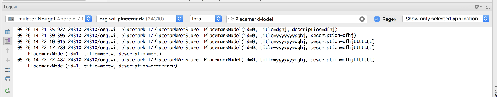

Application object + Model classes to manage placemarks.
Incorporate new 'Cancel' action into PlacemarkActivity. This should return to PlacemarkListActivity without adding a new Placemark.
...
<string name="menu_cancelPlacemark">Cancel</string>
...This resources must be in the menu folder in res
<?xml version="1.0" encoding="utf-8"?>
<menu xmlns:android="http://schemas.android.com/apk/res/android"
xmlns:app="http://schemas.android.com/apk/res-auto">
<item
android:id="@+id/item_cancel"
android:title="@string/menu_cancelPlacemark"
app:showAsAction="always"/>
</menu>In order to present the toolbar - we need to first support it:
...
override fun onCreate(savedInstanceState: Bundle?) {
...
toolbarAdd.title = title
setSupportActionBar(toolbarAdd)
...
}
}
...Then we need to inflate the menu:
override fun onCreateOptionsMenu(menu: Menu?): Boolean {
menuInflater.inflate(R.menu.menu_placemark, menu)
return super.onCreateOptionsMenu(menu)
}Finally, we need to handle the event:
override fun onOptionsItemSelected(item: MenuItem?): Boolean {
when (item?.itemId) {
R.id.item_cancel -> {
finish()
}
}
return super.onOptionsItemSelected(item)
}
...The PlacemarkAdapter class is currently in the same source file as the PlacemarkListActivity class. For clarity and ease of maintenance, move this into its own source file.
package org.wit.placemark.activities
import android.support.v7.widget.RecyclerView
import android.view.LayoutInflater
import android.view.View
import android.view.ViewGroup
import kotlinx.android.synthetic.main.card_placemark.view.*
import org.wit.placemark.R
import org.wit.placemark.models.PlacemarkModel
class PlacemarkAdapter constructor(private var placemarks: List<PlacemarkModel>) : RecyclerView.Adapter<PlacemarkAdapter.MainHolder>() {
override fun onCreateViewHolder(parent: ViewGroup?, viewType: Int): MainHolder {
return MainHolder(LayoutInflater.from(parent?.context).inflate(R.layout.card_placemark, parent, false))
}
override fun onBindViewHolder(holder: MainHolder, position: Int) {
val placemark = placemarks[holder.adapterPosition]
holder.bind(placemark)
}
override fun getItemCount(): Int = placemarks.size
class MainHolder constructor(itemView: View) : RecyclerView.ViewHolder(itemView) {
fun bind(placemark: PlacemarkModel) {
itemView.placemarkTitle.text = placemark.title
itemView.description.text = placemark.description
}
}
}Delete the PlacemarkAdapter class from PlacemarkListActivity - and rebuild and run the app now to verify that these changes have been engaged correctly.
Check the imports in PlacemarkListActivity:
The greyed out imported are no longer needed (they were used by PlacemarkAdapter). Remove them now and rebuild.
Introduce the following interface into the models package:
package org.wit.placemark.models
interface PlacemarkStore {
fun findAll(): List<PlacemarkModel>
fun create(placemark: PlacemarkModel)
}In the same package, implement this interface in a class called PlacemarkMemStore
package org.wit.placemark.models
class PlacemarkMemStore : PlacemarkStore {
val placemarks = ArrayList<PlacemarkModel>()
override fun findAll(): List<PlacemarkModel> {
return placemarks
}
override fun create(placemark: PlacemarkModel) {
placemarks.add(placemark)
}
}This is a simple encapsulation of our list of placemarks.
Rework all MainApp to use the above class:
// val placemarks = ArrayList<PlacemarkModel>()
val placemarks = PlacemarkMemStore() // recyclerView.adapter = PlacemarkAdapter(app.placemarks)
recyclerView.adapter = PlacemarkAdapter(app.placemarks.findAll()) // app.placemarks.add(placemark.copy())
app.placemarks.create(placemark.copy())
...
// app.placemarks.forEach { info("add Button Pressed: ${it}") }
app.placemarks.findAll().forEach{ info("add Button Pressed: ${it}") }
...Introduce a new method in PlacemarkMemStore which will log all placemarks. Call it whenever a new placemark is added.
...
override fun create(placemark: PlacemarkModel) {
placemarks.add(placemark)
logAll()
}
fun logAll() {
placemarks.forEach{ info("${it}") }
}
...For the above to compile, you will. need to adjust the class declaration:
class PlacemarkMemStore : PlacemarkStore, AnkoLogger {We can now remove the current logging from PlacemarkActivity:
info("add Button Pressed: $placemarkTitle")
// app.placemarks.findAll().forEach{ info("add Button Pressed: ${it}") }In PlacemarkAdapter, introduce this new interface:
interface PlacemarkListener {
fun onPlacemarkClick(placemark: PlacemarkModel)
}Place it just before the PlacemarkAdapter class (outside the class).
This new interface will represent click events on the placemark Card, and allow us to abstract the response to this event.
Here is a revised version of the Adapter - which accepts and installs an event handler based on this interface:
class PlacemarkAdapter constructor(private var placemarks: List<PlacemarkModel>,
private val listener: PlacemarkListener) : RecyclerView.Adapter<PlacemarkAdapter.MainHolder>() {
override fun onCreateViewHolder(parent: ViewGroup, viewType: Int): MainHolder {
return MainHolder(LayoutInflater.from(parent?.context).inflate(R.layout.card_placemark, parent, false))
}
override fun onBindViewHolder(holder: MainHolder, position: Int) {
val placemark = placemarks[holder.adapterPosition]
holder.bind(placemark, listener)
}
override fun getItemCount(): Int = placemarks.size
class MainHolder constructor(itemView: View) : RecyclerView.ViewHolder(itemView) {
fun bind(placemark: PlacemarkModel, listener : PlacemarkListener) {
itemView.placemarkTitle.text = placemark.title
itemView.description.text = placemark.description
itemView.setOnClickListener { listener.onPlacemarkClick(placemark) }
}
}
}Look carefully at the very last line of the bind function above:
itemView.setOnClickListener { listener.onPlacemarkClick(placemark) }Can you figure our that is going on here?
Perhaps if we now use this capability in PlacemarkListActivity it will become clearer.
First, declare that we will implement the new interface:
class PlacemarkListActivity : AppCompatActivity(), PlacemarkListener {... then the actual implementation:
override fun onPlacemarkClick(placemark: PlacemarkModel) {
startActivityForResult(intentFor<PlacemarkActivity>(), 0)
}Finally, in onCreate, change the way we create the adapter:
recyclerView.adapter = PlacemarkAdapter(app.placemarks.findAll(), this)If you run the app now - and add some placemarks. Selecting a placemark from the list will start the PlacemarkActivity. However, the Placemark we select will not appear in the PlacemarkActivity view. We will fix this in the next steps.
We will switch on some additional Kotlin goodness - which will significantly simplify the next set of features.
Before the dependencies:
androidExtensions {
experimental = true
}These experimental features are discussed here:
They are not without some issues - but quite usable.
This is a revised version of the PlacemarkModel class:
package org.wit.placemark.models
import android.os.Parcelable
import kotlinx.android.parcel.Parcelize
@Parcelize
data class PlacemarkModel(var title: String = "",
var description: String = "") : ParcelableIt implements a parcelize capability. This is discussed in detail here:
...but this was written without using the new feature we have just enabled, which dramatically reduces the boilerplate even further. Our approach is discussed here:
(towards the end)
We can now pass the selected placemark when we start PlacemarkActivity:
Change the current onPlacemarkClick implementation:
override fun onPlacemarkClick(placemark: PlacemarkModel) {
startActivityForResult(intentFor<PlacemarkActivity>(), 0)
}to this:
override fun onPlacemarkClick(placemark: PlacemarkModel) {
startActivityForResult(intentFor<PlacemarkActivity>().putExtra("placemark_edit", placemark), 0)
}Notice we are passing the selected placemark to the activity - this is enabled via the parcelable mechanism we have just turned on.
Now, in PlacemarkActivity, we can retrieve the placemark in onCreate()
override fun onCreate(savedInstanceState: Bundle?) {
...
if (intent.hasExtra("placemark_edit")) {
placemark = intent.extras.getParcelable<PlacemarkModel>("placemark_edit")
placemarkTitle.setText(placemark.title)
description.setText(placemark.description)
}
...
}Place this before the btnAdd.setOnClickListener() statement.
We read back the placemark, and place its field into the view controls.
Run the app now - and verify that if you select a placemark - you will be taken to the PlacemakrActivity containing its values.
Currently, we 'edit' a placemark, make a change - then it will create a new placemark. This clearly is not the appropriate behavior. We should update the placemark we have been passed.
To do this, we need a unique way of identifying placemarks - this is usually via an id. This is the current model:
@Parcelize
data class PlacemarkModel(var title: String = "",
var description: String = "") : ParcelableThis is a revised version to include an ID:
@Parcelize
data class PlacemarkModel(var id: Long = 0,
var title: String = "",
var description: String = "") : ParcelableWe can now introduce a new method in PlacemarkStore interface:
...
fun update(placemark: PlacemarkModel)
...... and this is the completely revised PlacemarkMemStore implementation:
package org.wit.placemark.models
import org.jetbrains.anko.AnkoLogger
import org.jetbrains.anko.info
var lastId = 0L
internal fun getId(): Long {
return lastId++
}
class PlacemarkMemStore : PlacemarkStore, AnkoLogger {
val placemarks = ArrayList<PlacemarkModel>()
override fun findAll(): List<PlacemarkModel> {
return placemarks
}
override fun create(placemark: PlacemarkModel) {
placemark.id = getId()
placemarks.add(placemark)
logAll()
}
override fun update(placemark: PlacemarkModel) {
var foundPlacemark: PlacemarkModel? = placemarks.find { p -> p.id == placemark.id }
if (foundPlacemark != null) {
foundPlacemark.title = placemark.title
foundPlacemark.description = placemark.description
logAll()
}
}
fun logAll() {
placemarks.forEach { info("${it}") }
}
}Notice how we are generating a new ID when we create placemarks.
These features will enable us to implement a placemark edit behaviour.
Placemark application so far:
In PlacemarkActivity - we have the following hard coded string:
toast("Please Enter a title")These strings should be in the strings.xml resource file. Move them in there, and figure out how to load the strings in PlacemarkActivity.
For guidance, see:
When you select a placemark - and the PlacemarkActivity is launched, the button label is 'Add Placemark'. See if you can change this to 'Save Placemark'. This is only to be changed if PlacemarkActivity is launched with a placemark passed to it. Make sure the Save Placemark string is externalized (in strings.xml)
When you select a placemark from PlacemarkListActivity - it presents the activity in the PlacemarkActivity. If you press 'Save Activity' - a new activity is created and appended to the list.
Change this behaviour such that the button should update the existing placemark with the newly entered values, not create a new one. We have new features in PlacemarkStore to enable you to implement this (the update method). Essentially, you will need to call update OR create when handling the button event.
If you complete the implementation, you will notice that even if you update a Placemark's contents, the new contents will not be displayed in PlacemarkList. However, if you consult the logs you may be able to see if the values are actually changed.
If you have trouble finding the correct logs, enter PlacemarkModel in the expression window in logcat. This should remove all logs except the ones you want to see:
